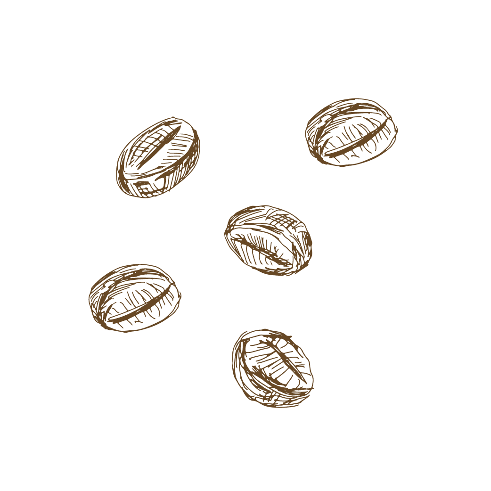

ROASTING
This is the final step of coffee production, before the beans hit the
market… when coffee beans are roasted they split and their coating is released, creating the classic
brown bean we know and love. Roasting determines coffees flavor and strength as well as caffeine
content. Longer roasting time means stronger flavor, and likewise shorter time yields mild flavor. When it comes to caffeine content,
the longer roast time removes more of the chemical – so lighter roasts have higher amounts of
caffeine. You can buy green beans and roast them at home for a fresher experience, but many
people buy preroasted.